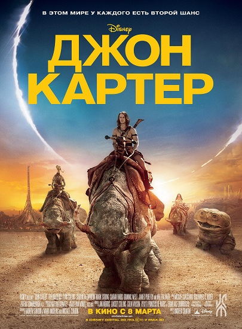
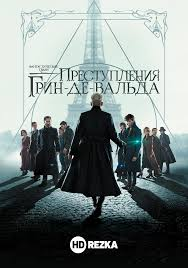

Ihor Vershniak
Почему выбрали Front-end:
- Спрос на специалистов данного направления был, есть и будет еще в обозримом будущем.
- Cпециальность позволяет работать не только в офисе, но и удаленно.
- Фронтенд динамично развивается, все время есть куда расти и что изучать.
- Широкая сфера применения.
Мой любимый сайт
О себе
Есть люди, которые изобретают и внедряют новые технологии, есть такие, кто создает и творит, используя эти технологии. И есть армия. Я служу в армии.
Пришло время сменить род деятельности и примкнуть к ранее указанной категории.
Ожидание от курса
Хотелось бы освоить основы новой творческой профессии. Научиться качественно верстать, используя кроссбраузерность и адаптивность.
Любимые фильмы
Джон Картер
«Джон Картер» — фантастический приключенческий боевик режиссёра Эндрю Стэнтона, поставленный по книге Эдгара Райса Берроуза «Принцесса Марса». Мировая премьера состоялась 7 марта 2012 года.

Гарри Поттер и узник Азкабана
В третьей части экранизации бестселлера о юном волшебнике, полюбившиеся всем герои — Гарри Поттер, Рон и Гермиона — возвращаются уже на третий курс школы чародейства и волшебства «Хогвартс». На этот раз они должны раскрыть тайну узника, сбежавшего из зловещей тюрьмы Азкабан, чье пребывание на воле создает для Гарри смертельную опасность…

Фантастические твари: Преступления Грин-де-Вальда
В конце первого фильма могущественный темный волшебник Геллерт Грин-де-Вальд был пойман сотрудниками МАКУСА (Магического Конгресса Управления по Северной Америке), не без помощи Ньюта Саламандера. Выполняя свое обещание, темный маг устраивает грандиозный побег и начинает собирать сторонников, больши…
Чужой: Воскрешение
Спустя двести лет после событий, произошедших на планете-тюрьме, группа ученых, опекаемых военным командованием, клонирует Эллен Рипли, чтобы с ее помощью заполучить детеныша инопланетного монстра. Вскоре он уже сам начинает плодиться, производя на свет новую породу — помесь кровожадного пришельца и…